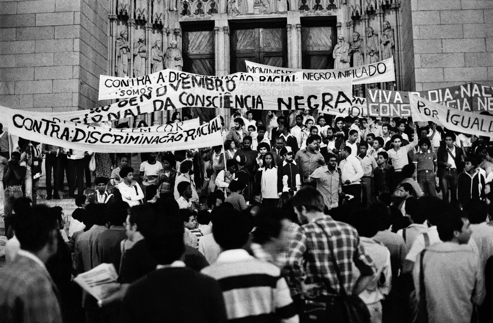

Preconceito
é uma opinião, um julgamento ou um sentimento formado antecipadamente e sem base em dados reais.
Discriminação
Ação prática de separar, excluir ou diferenciar indivíduos injustamente.
Antirracismo
Postura ativa e necessária para combater o racismo no dia a dia.
O Que é o Racismo?
O racismo é um dos principais problemas sociais enfrentados nos séculos XX e XXI, causando diretamente exclusão, desigualdade social e violência.
Trata-se da discriminação e do preconceito praticados (direta ou indiretamente) contra indivíduos ou grupos por causa de sua etnia, raça ou cor de pele.
